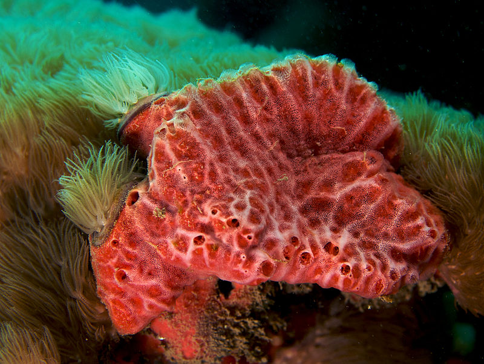
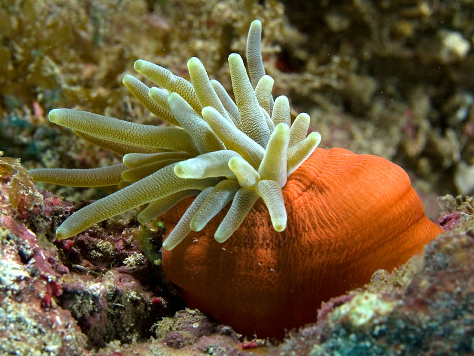
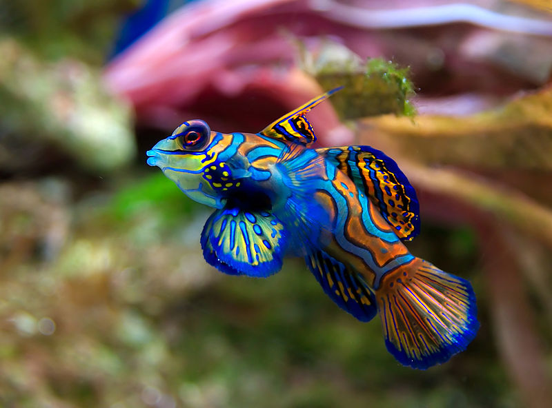
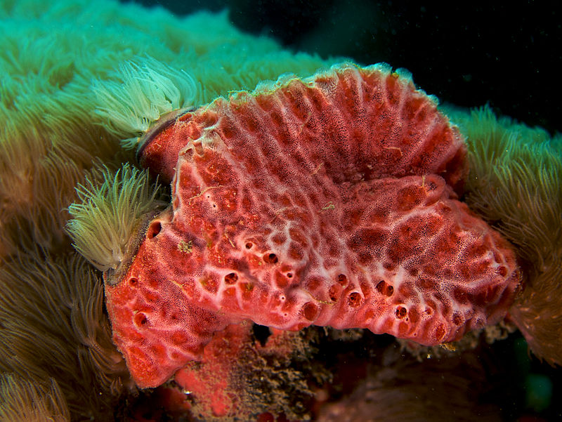
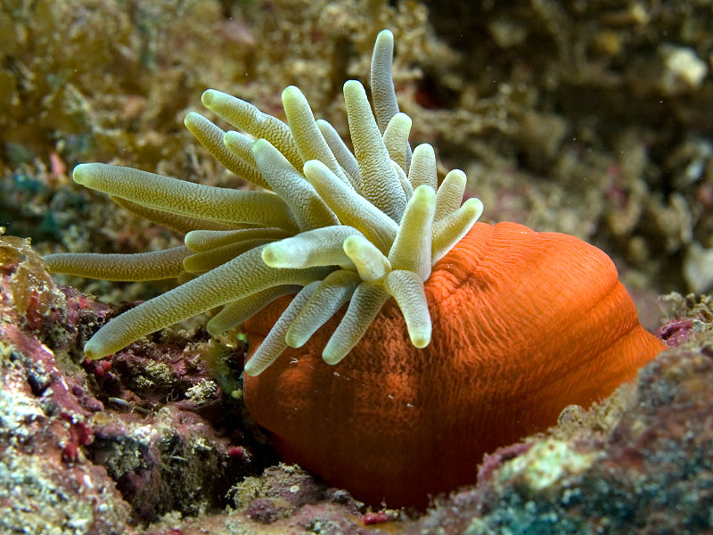
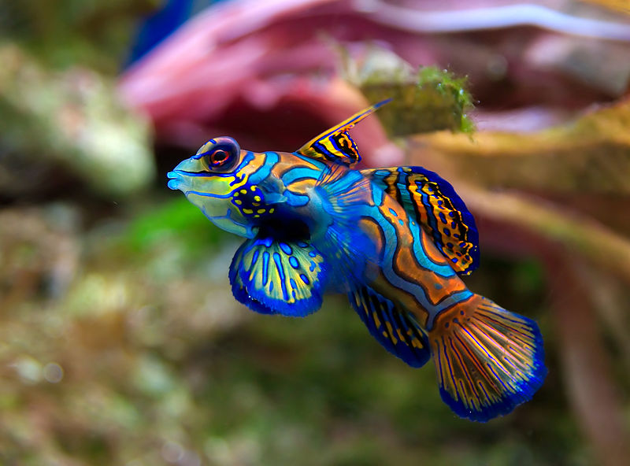

Τα ζώα είναι πολυκύτταροι ευκαρυωτικοί οργανισμοί οι οποίοι σχηματίζουν ιδιαίτερο βασίλειο με την επιστημονική ονομασία Animalia. Κατά κανόνα τα περισσότερα ζώα είναι ετερότροφα, αναπνέουν οξυγόνο, μπορούν να κινούνται, αναπαράγονται εγγενώς και κατά την πρώιμη εμβρυϊκή ανάπτυξή τους σχηματίζουν μία κοίλη σφαίρα κυττάρων, το βλαστίδιο. Έχουν περιγραφεί περισσότερα από 1,5 εκατομμύρια αρτίγονα είδη ζώων—εκ των οποίων περίπου το 1 εκατομμύριο είναι έντομα—αλλά υπολογίζεται ότι συνολικά ξεπερνούν τα 7 εκατομμύρια. Το μήκος των ζώων κυμαίνεται από 8,5 χιλιοστόμετρα έως 33,6 μέτρα. Παρουσιάζουν πολύπλοκες αλληλεπιδράσεις μεταξύ τους και με το περιβάλλον τους, δημιουργώντας περίπλοκα τροφικά πλέγματα. Η επιστήμη που μελετά τα ζώα ονομάζεται ζωολογία.
Τα περισσότερα είδη ζώων ανήκουν στον κλάδο των αμφίπλευρων (Bilateria), δηλαδή το σώμα τους έχει αμφίπλευρη συμμετρία (διαχωρίζεται από ένα μοναδικό επίπεδο σε δύο κατοπτρικά ημίσεα, ένα δεξί και ένα αριστερό). Στα αμφίπλευρα περιλαμβάνονται τα πρωτοστόμια—στα οποία με την σειρά τους ανήκουν πολλές ομάδες ασπονδύλων όπως οι νηματώδεις, τα αρθρόποδα και τα μαλάκια—και τα δευτεροστόμια, όπου ανήκουν τα εχινόδερμα και τα χορδωτά (περιλαμβάνουν τα σπονδυλωτά). Διάφορες μορφές ζωής της εδιακάριας περιόδου του ύστερου προκάμβριου θεωρούνται από πολλούς ότι αποτελούν πρώιμα ζώα. Ωστόσο τα περισσότερα σύγχρονα ζωικά φύλα κάνουν σαφή εμάνιση στο αρχείο των απολιθωμάτων ως θαλλάσια είδη κατά την διαρκεια της κάμβριας έκρηξης περίπου 542 εκατομμύρια χρόνια πριν. Από την άλλη έχουν ταυτοποιηθεί 6,331 ομάδες γονιδίων που είναι κοινά σε όλα τα ζώα· πιθανώς αποτελούν κληρονομιά ενός μοναδικού κοινού προγόνου ο οποίος υπολογίζεται ότι έζησε περίπου 650 εκατομμύρια χρόνια πριν κατά την Κρυογενή περίοδο.
Ο Αριστοτέλης είχε διαιρέσει τα ζώα σε δύο κατηγορίες ανάλογα με την παρουσία ή μη αίματος. Ο Κάρολος Λινναίος είναι ο δημιουργός του πρώτου ιεραρχικού συστήματος βιολογικής ταξινόμησης των ζώων, του Systema Naturae το 1758, το οποίο ο Ζαν Μπατίστ Λαμάρκ επέκτεινε σε 14 φύλα το 1809. Το 1874, ο Ερνστ Χέκελ διαχώρισε τα ζώα στα πολυκύτταρα Μετάζωα (πλέον συνώνυμο του όρου Ζώα) και στα Πρωτόζωα, μονοκύτταρους οργανισμούς οι οποίοι δεν θεωρούνται πια ζώα. Στην σύγχρονη εποχή, η βιολογική ταξινόμηση των ζώων βασίζεται σε προχωρημένες τεχνικές, όπως η μοριακή φυλογένεση, που μπορούν να αποκαλύψουν με ακρίβεια τις εξελικτικές σχέσεις μεταξύ των ζωικών τάξων. Οι άνθρωποι χρησιμοποιούν πολλά ζώα για παροχή τροφής, όπως κρέατος, γάλακτος και αβγών, για πρώτες ύλες, όπως δέρμα και μαλλί, ως κατοικίδια και ως ζώα εργασίας είτε για την δύναμή τους είτε για μεταφορές. Οι σκύλοι χρησιμοποιούνται παραδοσιακά στο κυνήγι, ενώ πολλά άλλα χερσαία και υδρόβια ζώα αποτελούν τα θηράματα του κυνηγιού. Επίσης τα ζώα εμφανίζονται στην τέχνη ήδη από πολύ νωρίς και παρουσιάζονται στην μυθολογία και την θρησκεία.
Η λέξη "ζώο" προέρχεται από την αρχαία ελληνική λέξη ζῷον που με τη σειρά της παράγεται από το ρήμα ζῶ. Στην καθημερινή χρήση της καθομιλουμένης, ο όρος «ζώο» χρησιμοποιείται συνήθως -λανθασμένα-για αναφορές μόνο στα μέλη του βασιλείου Ζώα πλην του ανθρώπου. Μερικές φορές, στην καθομιλουμένη εννοούνται μόνο οι πλησιέστεροι συγγενείς των ανθρώπων όπως τα θηλαστικά και άλλα σπονδυλωτά. Στην βιολογία, η λέξη χρησιμοποιείται ως αναφορά σε όλα τα μέλη του βασιλείου Ζώα, και περιλαμβάνει ποικίλους οργανισμούς πολύ διαφορετικούς μεταξύ τους όπως οι σπόγγοι, οι μέδουσες, τα έντομα και οι άνθρωποι.
| Σπόγγος | Πολύποδας | Σκώληκας | Ακτινωτή έκρηξη των σκωληκόμορφων | Μαλάκια | Αρθρόποδα | Τετράποδα |
|---|---|---|---|---|---|---|
| Τα ζωικά κύτταρα είναι ετερότροφα, δηλαδή πρέπει να τρώνε για να επιζήσουν, αντίθετα με τα φυτά. Η επιβίωση ενός ζώου είναι συνυφασμένη με τη μέριμνα για την εύρεση τροφής. Η στρατηγική των σπόγγων συνίσταται απλώς στη διήθηση του νερού που διέρχεται από αυτούς, για να συλλάβουν τη λεία τους. Αυτή η στρατηγική δεν απαιτεί ούτε πολύπλοκη δομή, ούτε συντονισμένη κίνηση. Οι σπόγγοι σχηματίζουν τον πιο απλό οργανισμό: αποτελούν αποικίες κυττάρων ουσιαστικά αδιαφοροποίητων, χωρίς πραγματικές εσωτερικές δομές, ούτε λειτουργία. Είναι ζώα χωρίς νευρικό σύστημα ούτε πεπτικό σωλήνα. Τα σώματά τους δεν σχηματίζουν παρά μόνο δύο κυτταρικές στιβάδες (εξώδερμα και ενδόδερμα). | Η μετάβαση από ένα επίπεδο του τύπου σπόγγου σε μία οργάνωση του τύπου ανεμώνης απαντά πάντα στο συνεχές ερώτημα: πώς να φάω; Αυτή η ομάδα ανέπτυξε μία νέα τεχνική που συνίσταται στην ώθηση της τροφής προς μία κοιλιά (γαστρική κοιλότητα) όπου πραγματοποιείται η πέψη της χωρίς τον κίνδυνο να διαφύγει. Αυτή η καινοτόμος στρατηγική τους επιτρέπει να τρέφονται με μεγαλύτερα θηράματα (αυτά που οι σπόγγοι δεν μπορούν να διηθήσουν). Κατά την προοδευτική απόκτηση των ζωικών λειτουργιών, αυτή η εξέλιξη προϋποθέτει δύο πράγματα: τα κύτταρα ειδικεύονται (απόκτηση νευρικών και μυϊκών κυττάρων που επιτρέπουν συντονισμένες κινήσεις) και ο οργανισμός αποκτά την ικανότητα υιοθέτησης καθορισμένου σχήματος (μορφογένεση), ώστε μπορούν αποτελεσματικοί πλόκαμοι να οδηγούν τη λεία σε μία αποτελεσματική γαστρική κοιλότητα | Η οργάνωση του τύπου σκώληκα είναι μία νέα απάντηση στο θεμελιώδες ζήτημα του ζωικού βασιλείου, την εύρεση τροφής. Η βασική στρατηγική των οργανισμών τύπου «σκώληκα» (σκωληκόμορφα) είναι η μετακίνηση προς αναζήτηση τροφής, αντί να περιμένουν μέχρι να περάσει αυτή από κοντά. Αυτή η στρατηγική επιτρέπει ειδικά την εκμετάλλευση οργανικών αποβλήτων, τα οποία ενδεχομένως έχουν υψηλή διατροφική αξία, αλλά δεν μετακινούνται. Πέραν των σπόγγων κα των πολυπόδων, όλοι οι πολύπλοκοι οργανισμοί είναι αμφίπλευρα και προέρχονται από ένα θεμελιώδες σχήμα: τον σωλήνα. Η ανάπτυξη είναι οργανωμένη γύρω από τον άξονα κεφαλή/ουρά από τη μία μεριά, και τον άξονα ράχη/κοιλία από την άλλη. Αυτοί οι δύο άξονες παράγουν ένα σχέδιο ενός συνόλου του οποίου οι πλευρές δεξιά και αριστερά τείνουν να είναι συμμετρικές, εξού και και η ονομασία τους αμφίπλευρα. | Η απόκτηση του πεπτικού σωλήνα και της ικανότητας της εθελουσίας μετατοπίσεως (ερπυσμός) ήταν η συνταγή της επιτυχίας: οι σκωληκόμορφοι οργανισμοί γίνονται αρκετά ευπροσάρμοστοι και μπορούν να αποτελέσουν τη βάση πολυποίκιλων τρόπων ζωής. Είναι αυτό που ονομάζουμε ακτινωτή έκρηξη: από ένα σχήμα κοινής βάσεως, οι μορφές παίρνουν δρόμους που αποκλίνουν, σαν να εκπέμπονται ακτινωτά από μία κεντρική έκρηξη. Όλα τα άλλα πιο εξελιγμένα σχήματα οργάνωσης στηρίζονται σε αυτόν τον θεμελιώδη τύπο: είναι σκώληκες λίγο πιο σύνθετοι. | Τα Μαλάκια εξελίχθηκαν από μία οργάνωση τύπου σκώληκα. Το λειτουργικό χαρακτηριστικό που φαίνεται να κατέστησε τα πρώιμα μαλάκια ήταν η θωράκιση, επιτρέποντάς τους να προστατεύονται από δραστήριους θηρευτές: η απόκτηση ασβεστολιθικών πλακών που προστατεύουν τη ραχιαία περιοχή. Αυτά τα πρωτόγονα μαλάκια πρέπει άρα να έμοιαζαν με τα Πολυπλακοφόρα, αλλά αυτός ο τύπος είναι σήμερα πολύ περιθωριακός. | Η επιτυχής συνταγή αντιστοιχεί στη γενική μορφή των μυριαπόδων. Είχε γίνει αμέσως η αρχή μίας νέας ακτινωτής εκρήξεως, που εξερεύνησε διάφορες συνταγές για να αναπτύξει πολλών ειδών εξαρτήματα, όπως μασητικά, συλληπτήρια, βαδιστικά, συζευκτικά, κολυμβητικά κ.ά. Ο κλάδος των αρθροπόδων περιέχει μακράν τα περισσότερα είδη και τα περισσότερα άτομα ολόκληρου του ζωικού βασιλείου. Τα αρθρόποδα μετράνε πάνω από ενάμισυ εκατομμύριο σωζόμενα είδη. Η κεντρική ερώτηση που φαίνεται να διέπει την ποικιλότητά τους: πόσα πόδια χρειάζονται για να μετακινηθούν. | Τα τετράποδα, ζώα με τέσσερα πόδια, πραγματοποίησαν ακτινωτή έκρηξη αφού κατέκτησαν την ικανότητα να μετακινούνται επάνω στη γη. Ωστόσο, ορισμένες ομάδες ειδών όπως τα κητώδη ή τα φίδια δεν διατήρησαν, λόγω της εξελίξεώς τους, παρά ίχνη των άκρων τους. Τα τετράποδα περιλαμβάνουν ζωα πραγματικά διαφορετικών μεγεθών, από μικροσκοπικά θηλαστικά ως την γαλάζια φάλαινα η οποία είναι το μεγαλύτερο γνωστό ζώο όλων των εποχών, αλλά δεν αντιπροσωπεύουν παρά ένα ελάχιστο μέρος όλων των ζωντανών ειδών (λίγο περισσότερο από 2%) και της βιομάζας. Παρόλα αυτά, συγκαταλέγονται μεταξύ των πλέον γνωστών στον άνθρωπο ζώων των οποίων ο ίδιος αποτελεί μέρος. Αν και ο άνθρωπος προσπαθούσε, τουλάχιστον από τον Αριστοτέλη, να κατατάξει τα διάφορα είδη σε ομογενείς ομάδες, κατόρθωσε να κατανοήσει τη φυλογένεση αυτής της ομάδας μόνο στο τέλος του 19ου αιώνος. Σήμερα θεωρούμε ότι αυτή η ομάδα αποτελείται από τα αμφίβια, τα Σαυρόψιδα (δηλαδή τα ερπετά και τα πτηνά) και τα θηλαστικά. |
 




